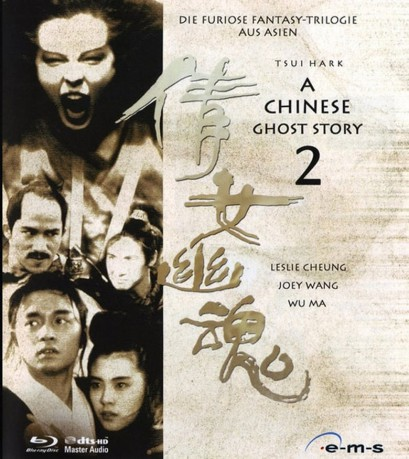

#9300 A Chinese Ghost Story II
 
 IMDB-Wertung: 7.0 / 10
IMDB-Wertung: 7.0 / 10  Metascore: 0
Metascore: 0 
Am Rande der Jahrtausendwende treibt ein böser Geist sein Unwesen: Unschuldige Menschen werden hingerichtet und verhaftet. Auch Liang Tsai-shen gerät auf der Suche nach seiner Braut ins Visier des Fürsten der Finsternis.
Jahr: 1990
Dauer: 102 Minuten
FSK: 16
Land: Hong-Kong Studio: ASCII VestronTonspuren:
Untertitel: Deutsch,
Auflösung: 1080p (1920x1040) Größe: 8683 MB
Genre: Action, Komödie, Fantasy, Liebe
Regisseur: Siu-Tung Ching
Drehbuch: Kan Keito
Soundtrack:
Darsteller:
 Leslie Cheung als Ling Choi San
Leslie Cheung als Ling Choi San- Joey Wang als Ching Fung / Windy
- Michelle Reis als Yuet Chi / Moon
 Jacky Cheung als Chi Chau / Autumn
Jacky Cheung als Chi Chau / Autumn Wu Ma als Yin Chek Hsia / Swordsman
Wu Ma als Yin Chek Hsia / Swordsman Siu-Ming Lau als Lord Fu
Siu-Ming Lau als Lord Fu Waise Lee als Swordsman Hu
Waise Lee als Swordsman Hu Kai Man Tin als Jail Guard
Kai Man Tin als Jail Guard Feng Ku als Elder Chu
Feng Ku als Elder Chu Shun Lau als High Priest
Shun Lau als High Priest- Siu-Chun To als Rebel
- Li Wang als Rebel
- Siu-Hung Lau als High Priest's Disciple
- Hui Li als High Priest's Disciple
- Yu-Chun Wang als High Priest's Disciple
- Ching-Ching Yeung als High Priest's Disciple
- Kwok-Kin Ng als Bounty Hunter
- Johnny Koo als Robber Chef at Inn
- Hung Wong als Escaped Criminal
 Sha-Fei Ouyang als (Guest star)
Sha-Fei Ouyang als (Guest star)- Wai-Ming Ng als
- Yun-Chuen Geung als
- Yuen-Chi Fung als
- Chan-Bun Fung als
- Sing Fei als
Datei: X:\HD-Eastern-Collections\Chinese Ghost Story\Chinese Ghost Story II, A (1990, FSK16, 1920x1040).mkv seit 25.07.2018
Festplatte: HD Eastern+Western
 Es gibt insgesamt 7 Filme in der Gruppe 'HD-Eastern-Collections\Chinese Ghost Story'
Es gibt insgesamt 7 Filme in der Gruppe 'HD-Eastern-Collections\Chinese Ghost Story'